Про кухню Південної Кореї
Корейська кухня відома своїми ферментованими продуктами, такими як кімчі (гостра маринована капуста) та різноманітними соусами на основі соєвих бобів. Страви часто поєднують солодкі, кислі та гострі смаки. Популярні страви включають біфбімбап (рис з овочами та м'ясом), булгогі (мариноване м'ясо), супи (як-от куксу) та барбекю (корейське барбекю з яловичини чи свинини). Корейська кухня також славиться своїми закусками (банчхан) та використанням паст на основі перцю і часнику.
Виберіть країну

ТокпоккіПопулярна корейська вулична страва з рисових тістечок, приготованих у гострому соусі з перцем і рибними котлетами.
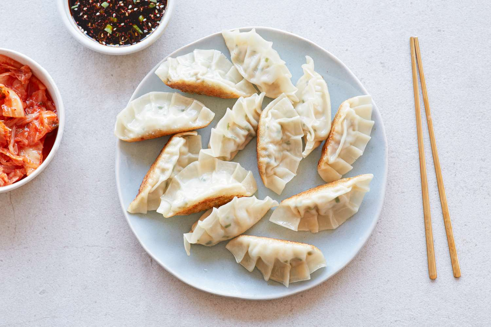
МандуКорейські пельмені з різними начинками, такими як м'ясо, овочі чи тофу, які можуть бути вареними, смаженими або паровими.
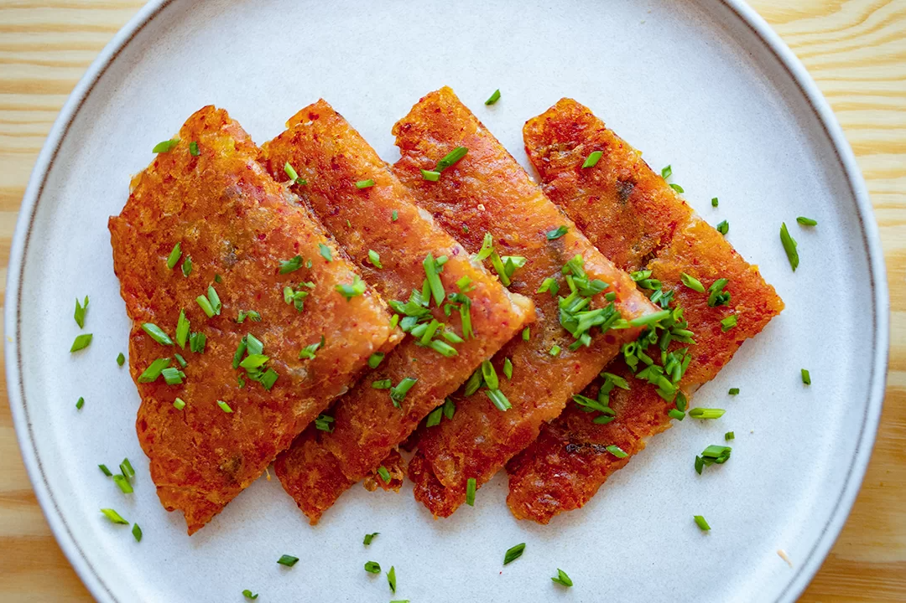
БучімґеКорейські млинці, зазвичай приготовані з тіста і начинок, таких як овочі, м'ясо або морепродукти, обсмажені до хрусткої скоринки.
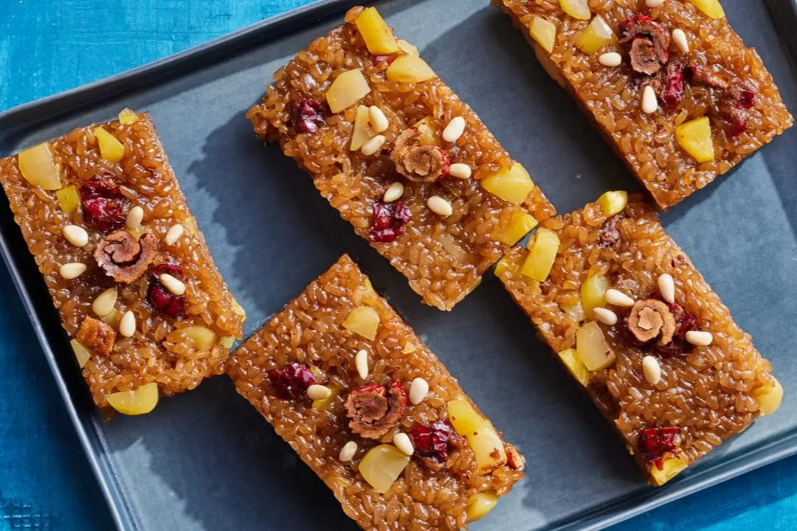
ЯкбапСолодкий десерт з клейкого рису, приготований з медом, фініками, каштанами і кедровими горіхами, популярний на свята.
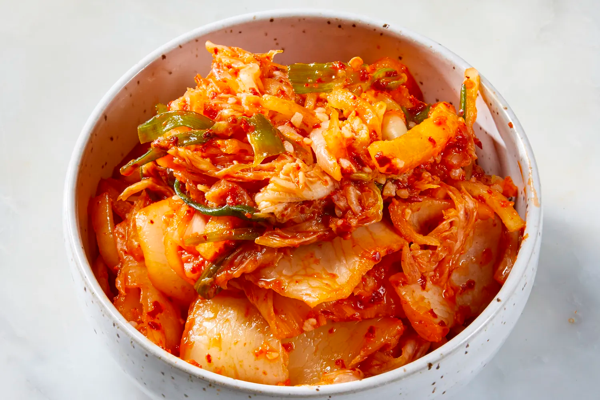
КімчіТрадиційна корейська страва з ферментованої капусти, приправленої часником, перцем чилі та іншими спеціями.
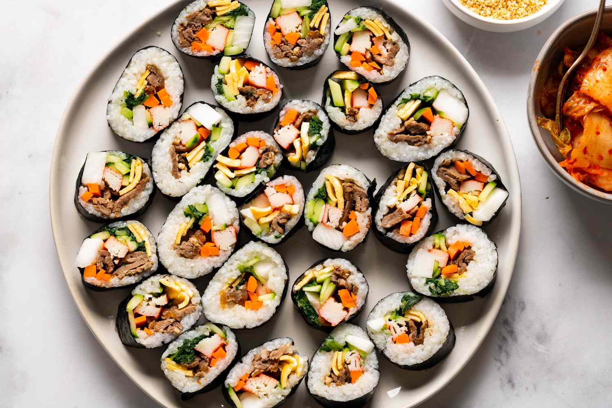
КімбапКорейський рол, схожий на суші, з рису, овочів, м'яса або риби, загорнутий у лист норі.
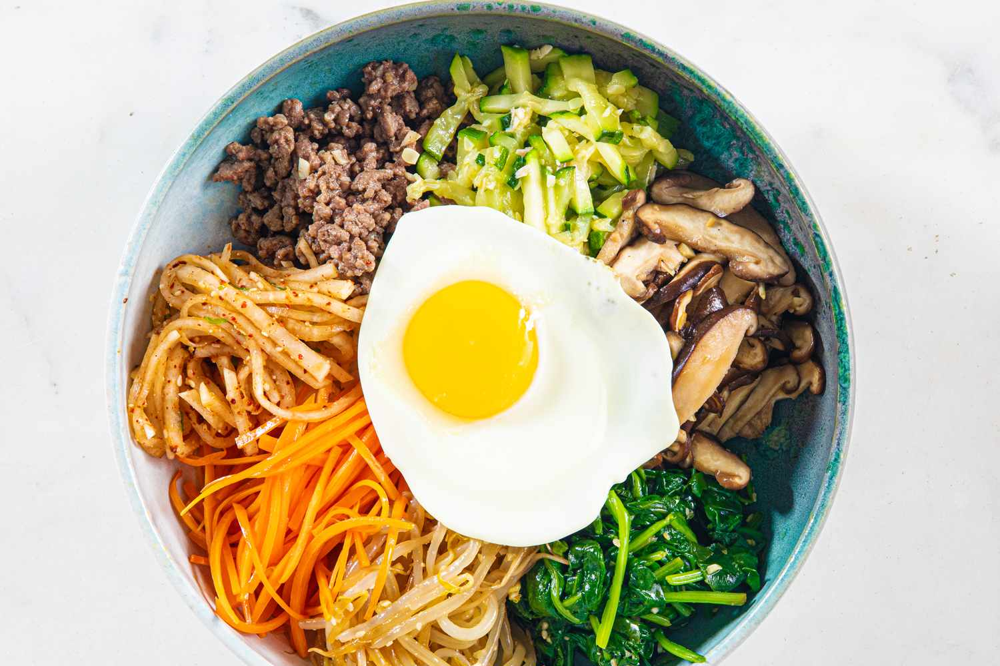
БібімбапПопулярна страва з рису, змішаного з овочами, м'ясом, яйцем і гострим соусом, яку подають у гарячій мисці.
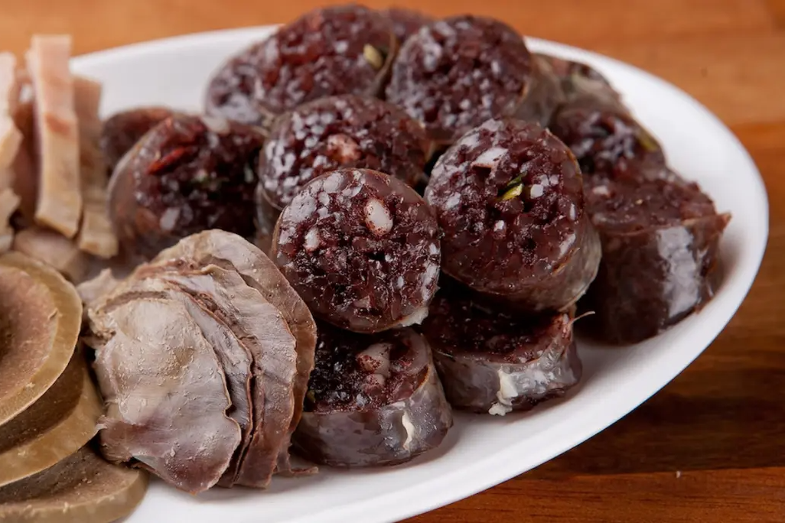
СундеКорейська ковбаса, наповнена сумішшю з крові, локшини та рису, часто подається з гострим соусом.

ЧапчеСтрава з прозорої крохмальної локшини, обсмаженої з овочами, м'ясом та солодко-солоним соусом.
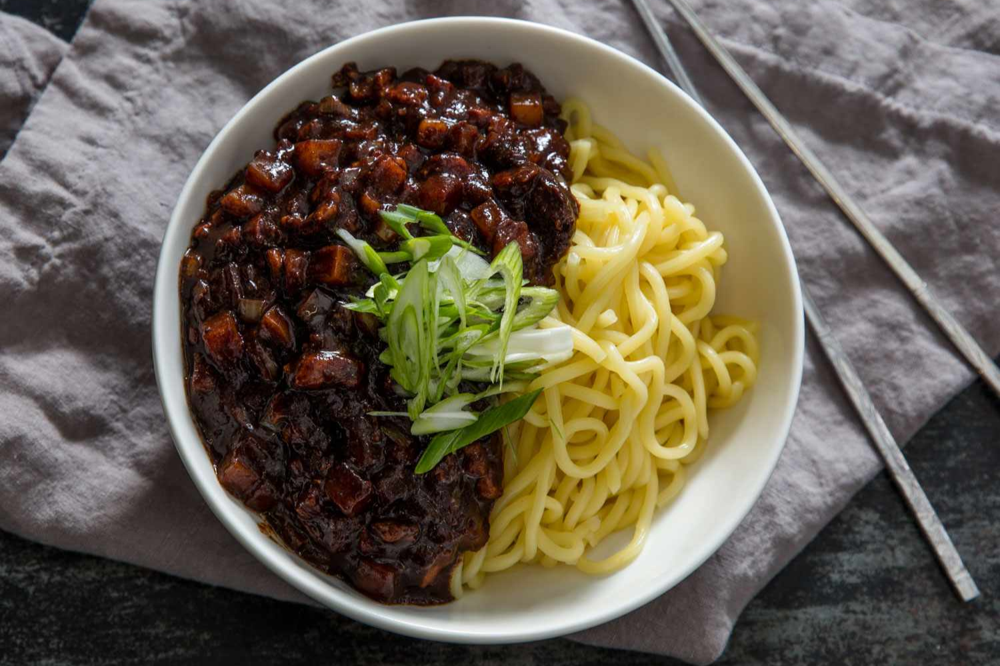
ЧжаджанмьонЛокшина з густим соусом з чорної бобової пасти, свинини та овочів, популярна китайсько-корейська страва.
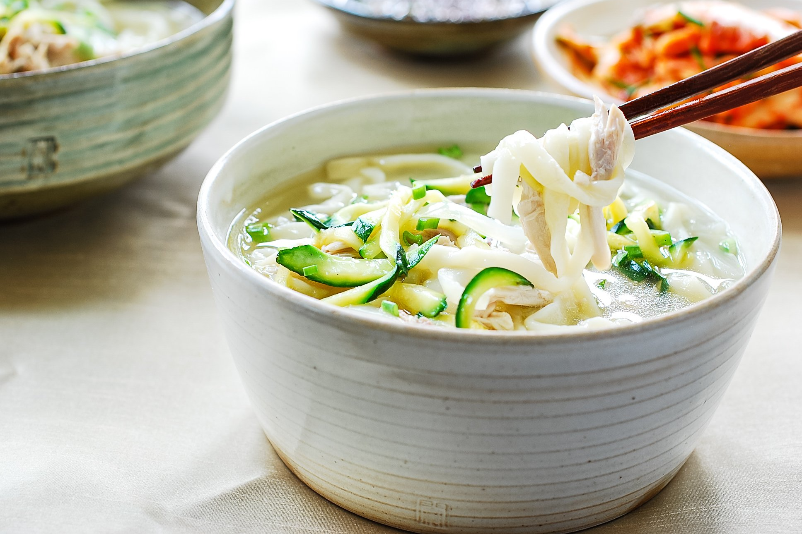
КалькуксуСуп з ручної локшини з бульйоном, зазвичай з курячим або яловичим м'ясом і овочами.
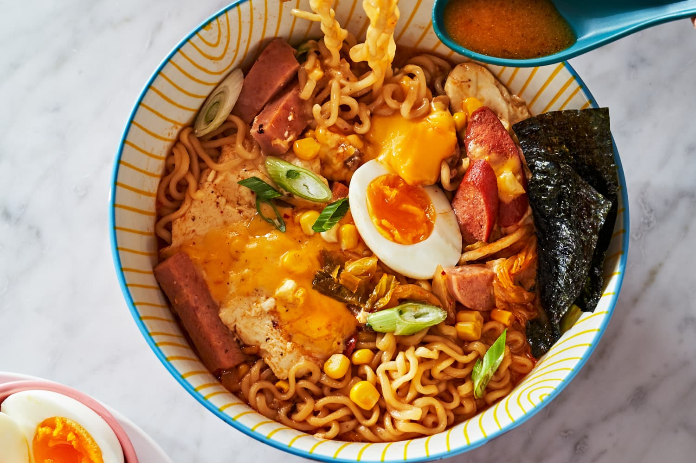
РамьонКорейська версія інстант-локшини, заправлена гострим бульйоном і різними інгредієнтами, як-от яйця, овочі чи м'ясо.

ПулькоґіТонко нарізане м'ясо (частіше яловичина), замариноване в солодкому соєвому соусі, смажене на грилі або в сковороді.

СамґьопсальСмажені на грилі шматочки свинячого живота, які подаються з різними соусами і овочами, популярна страва для барбекю.

Хеджанг-гукСуп, відомий як «страва для похмілля», приготований з яловичини, кров'яної ковбаси, тофу та овочів.
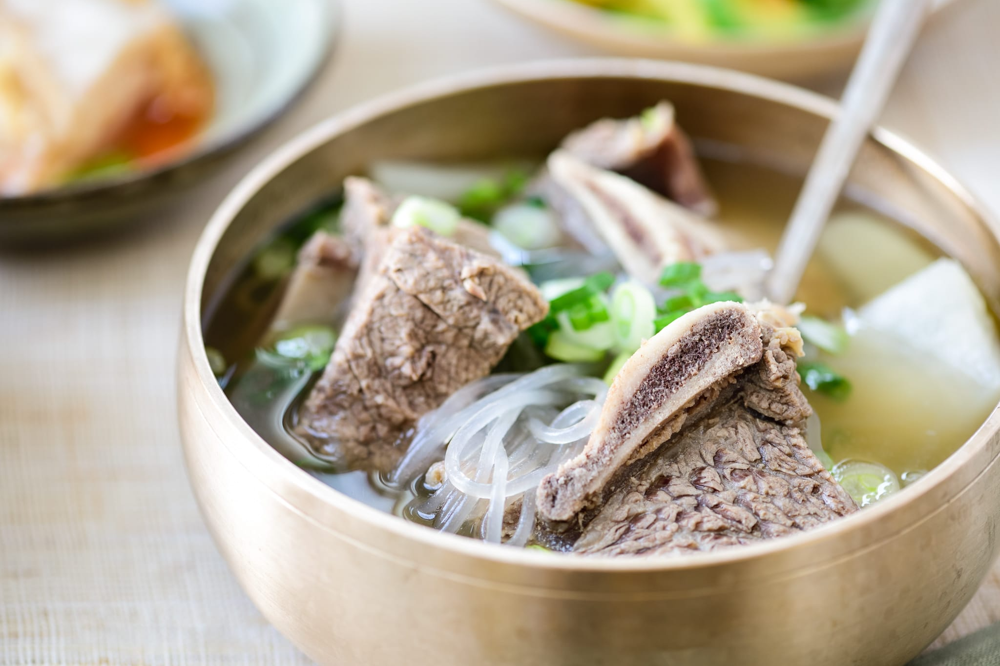
КальбітанСуп на основі реберець, який вариться на повільному вогні з овочами і спеціями, подається з рисом.

Пунґо-ппанСолодкий рибоподібний пиріжок з начинкою з солодкої пасти з червоних бобів, популярний зимовий десерт.

Чапссаль-ттокКорейські рисові тістечка з клейкого рису, часто з начинкою з солодкої бобової пасти або фруктів.
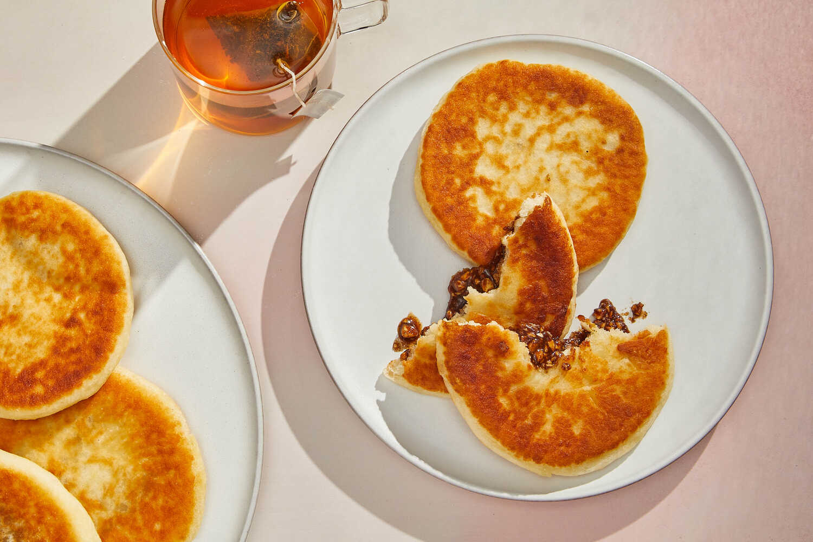
ХоттокСолодкі корейські млинці з начинкою з коричневого цукру, кориці та подрібнених горіхів, смажені до хрусткої скоринки.

ДальґонаТрадиційна корейська вулична цукерка з карамелізованого цукру та соди, яка створює пористу, легку текстуру.